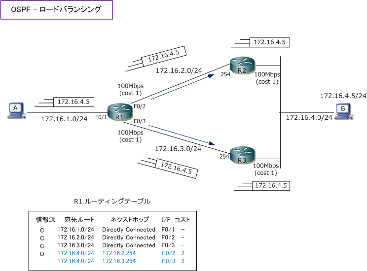

ECMP
ECMP（Equal Cost Multi Path）とは
ECMPとは、ルーティングにおいて、同一の宛先アドレスに到達するためのコスト（メトリック）が同じ 複数の経路が存在する場合、それらの経路にパケットを分散して転送する技術のことです。ECMPにより トラフィックの分散を実現して、ネットワーク帯域幅の利用効率を向上させることができます。
ECMPは「等コストマルチパス」または「等コストロードバランス」とも呼ばれます。ルーティングする ルータは宛先に対してコスト（メトリック）が等しい転送経路が存在する場合、動的に転送先を切り替え 複数の経路を同時に使用できます。この負荷分散機能は、ECMP routingまたはECMP load balancingと 呼ばれています。ECMP routingは、OSPF、IS-IS、EIGRP、BGPなどのルーティングプロトコルで実現 できます。ECMPには Per Packet ECMPとPer Flow ECMP の2種類の方式があり、Per Packet ECMPは パケットモードとも呼ばれ、Per Flow ECMPはフローモードとも呼ばれています。
| ECMPの方式 | 説明 |
|---|---|
| Per Packet ECMP （ パケットモード ） |
Per Packet ECMPはパケット単位の負荷分散であることからPer Packet Load Balancingとも言う。 各パケットをハッシュベースのアルゴリズムなどで複数の等コストパスに交互に転送していく方式。 トラフィックの分散が均等になりやすいが、パケットの順序が保証されない点がデメリットである。 |
| Per Flow ECMP （ フローモード ） |
Per Flow ECMPはフロー単位の負荷分散であることから、Per Flow Load Balancingとも言う。 同一のフロー（同一の送信元IP、宛先IP、ポート、プロトコルなど）のパケットは同一のパスに 割り当てられる方式。パケットの順序が維持されることから、ECMPを実装する時の推奨方式。 フロー数によりトラフィックが不均等になるデメリットがあるが、パケットの順序が維持されて アプリケーションの性能が安定するメリットの方が大きく、一般的に使用されている推奨方式。 |
ECMPは、適切なロードバラシングアルゴリズムの基でフロー単位の負荷分散を実行すれば、ネットワーク 帯域幅を効率的に利用できるメリットがあります。しかしECMPを使用していないネットワーク環境の方が パケットの順序、ハッシュ関数の影響などの問題は完全に排除できるだけでなく、障害発生時の切り分けが 容易になるという運用・保守の観点からメリットがあります。
ECMPの設定例
ECMPの実装は、ルータのルーティングテーブル上で同一コストの複数パスが存在していることが前提条件 となります。下図では「172.16.4.0/24」宛てのネットワークに等コストパスが2つ存在していることから、 パケットが負荷分散されて転送されます。つまり、Cisco機器ではECMPの実装はデフォルトで有効です。

OSPFでは同じコスト値の場合、デフォルトでは最大4つのパスがルーティングテーブルに格納されますが、 この最大値を変更することができます。以下の maximum-paths コマンドにより変更することができます。
等コストパスの最大数の設定
(config-router)# maximum-paths value
OSPFで等コストパスの最大数を 8 にする設定例
R1(config)# router ospf 1 R1(config-router)#maximum-paths 8
Catalyst9000シリーズでの実装
グローバルで定義するCEFのロードバランシングに使用されるアルゴリズムには以下の4種類があります。
| アルゴリズム | 説明 |
|---|---|
| universal | 送信元ハッシュ、宛先ハッシュ、IDハッシュを使用し、ユニバーサルにロードバランシングを実行 |
| original | 送信元および宛先のハッシュに基づき、ロードバランシングを実行 |
| tunnel | トンネル環境または少数のIP発信元と宛先アドレスのペアが存在する環境で実行 |
| include-ports | 発信元ポートを使用し、ロードバラシングを実行 |
特殊な環境を除き、最適なロードバランシングのアルゴリズムは universal であり、このアルゴリズムが デフォルト値となっています。このアルゴリズムを変更したい場合は以下のコマンドによる変更できます。
ロードバラシングのアルゴリズムの設定
(config)# ip cef load-sharing algorithm [ include-ports | original | tunnel | universal ]
ECMPロードバランシングはCEFを使用し、送信元と宛先のハッシュに基づいて複数の経路にトラフィック を分散します。インターフェースレベルで設定できるロードバランス方式には以下の2種類がありますが、 Catalyst9000シリーズでは宛先別ロードバランシング（ per-destination ）のみがサポートされています。
| ロードバランス方式 | 説明 |
|---|---|
| per-packet | パケット単位ロードバランシング。宛先ホストやユーザセッションに関係なく等コストのパスを通る。 パケットの順序が保証されないことから、エンドツーエンドで正常な通信ができない場合がある。 |
| per-destination | 宛先別ロードバランシング。送信元と宛先ホストが同じ場合は複数の等コストのパスが使用可能な 場合でも同じパスを使用する。パケットの順序が維持されてエンドツーエンドの通信も安定しやすい。 |
Catalyst9300/9400/9500では、vlan、インターフェース配下では ip load-sharing per-destination のみサポート
(config-if)# ip load-sharing per-destination